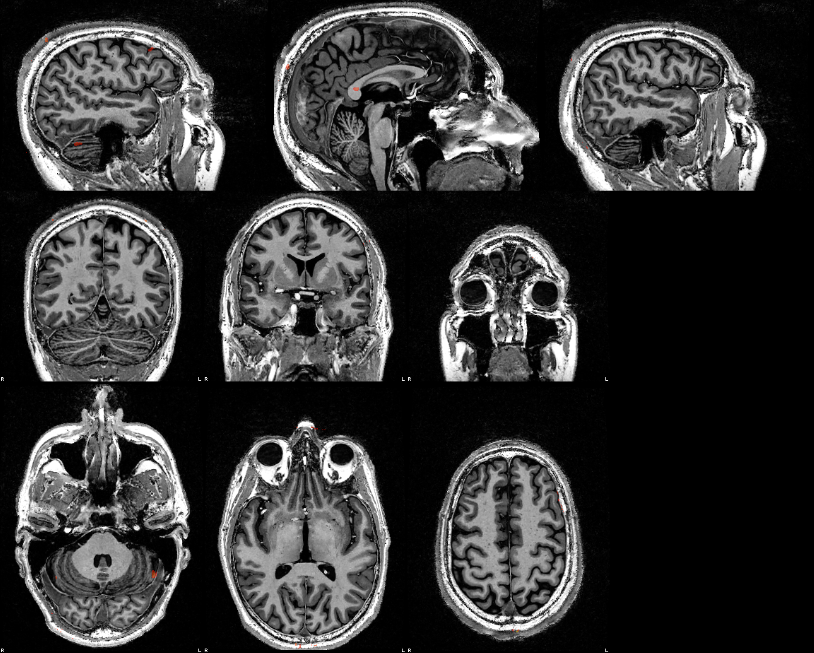
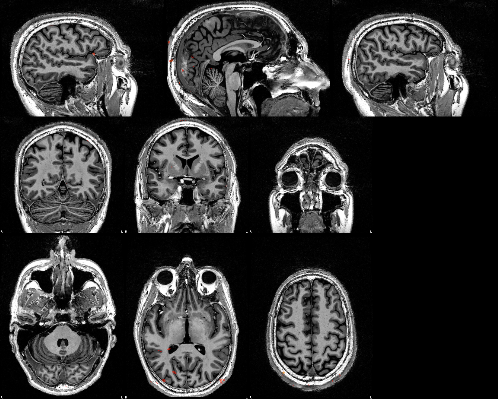
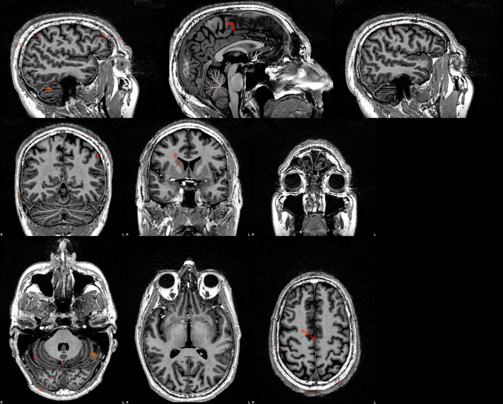
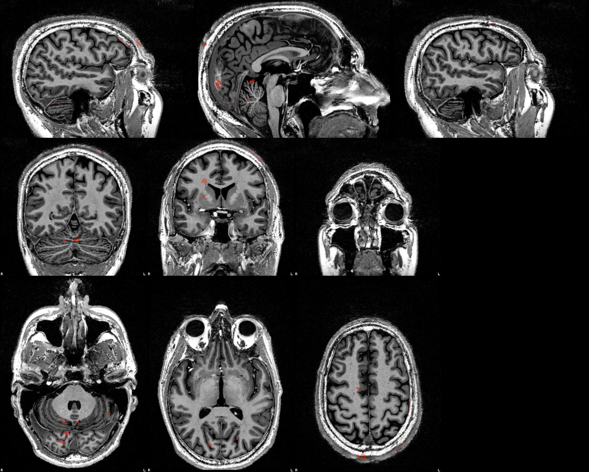

Methods
Single-echo run. Distortion correction: SynthSR + greedy 3D warp (fieldmap-less). Fuzzy ripple correction: runwise. Motion correction, distortion correction and the BOLD→T1w registration were applied in one interpolation.
The preprocessed series in T1w space (100 volumes, TR 3.1 s) was smoothed with a 5 mm FWHM Gaussian. 1 non-steady-state volume was dropped from the model. Design matrix: left and right block regressors (onsets and durations from the events file) convolved with a double-gamma HRF (SPM canonical: gamma shapes 6 and 16 s, undershoot ratio 1:6) and sampled at each volume's StartTime (slice-timing or FRISGO-spline reference; mid-TR if absent); an intercept; a discrete cosine basis with a 128 s high-pass cutoff; and the 6 rigid-body motion parameters (3 translations, 3 rotations) from head-motion estimation, without derivatives or squares. Other confounds (global, white-matter and CSF signals, CompCor, framewise displacement, DVARS) are in the confounds file but were not used. Serial correlation: lag-1 autocorrelation of the OLS residuals, spatially smoothed (5 mm), then a Prais-Winsten AR(1) refit per voxel. Contrasts: [1 −1], [−1 1], [1 0], [0 1]; df 86, stored in each t map's NIfTI intent. Figures show t ≥ 3.19 (p < 0.001, one-sided, uncorrected for multiple comparisons).
Head motion
Large or block-locked motion here can masquerade as activation.
Translation (mm; range -0.08 to 1.19)
Rotation (°; range -0.49 to 2.17)
Results
| Contrast | Peak t | Peak (mm) | Voxels shown | Median AR(1) | Map |
|---|---|---|---|---|---|
| left > right [1 -1] | 5.45 | -26, 75, 12 | 2715 | -0.29 | t map |
| right > left [-1 1] | 7.77 | -15, -99, -2 | 7575 | -0.29 | t map |
| left > baseline [1 0] | 6.66 | 4, -89, 28 | 9610 | -0.29 | t map |
| right > baseline [0 1] | 6.74 | -39, -23, 51 | 9784 | -0.29 | t map |
left > right [1 -1]

right > left [-1 1]

left > baseline [1 0]

right > baseline [0 1]
